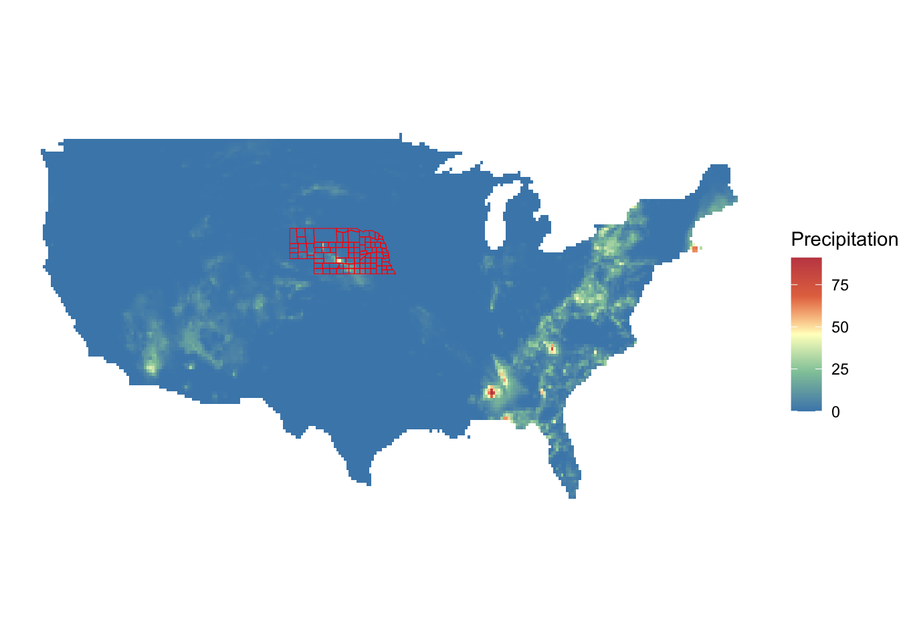

if (!require("pacman")) install.packages("pacman")
pacman::p_load(
terra, # handle raster data
tidyterra, # handle and visualize raster data
raster, # handle raster data
exactextractr, # fast extractions
sf, # vector data operations
dplyr, # data wrangling
tidyr, # data wrangling
data.table, # data wrangling
prism, # download PRISM data
tictoc, # timing codes
tigris # to get county sf
)5 Spatial Interactions of Vector and Raster Data
Before you start
In this chapter we learn the spatial interactions of a vector and raster dataset. We first look at how to crop (spatially subset) a raster dataset based on the geographic extent of a vector dataset. We then cover how to extract values from raster data for points and polygons. To be precise, here is what we mean by raster data extraction and what it does for points and polygons data:
Points: For each of the points, find which raster cell it is located within, and assign the value of the cell to the point.
Polygons: For each of the polygons, identify all the raster cells that intersect with the polygon, and assign a vector of the cell values to the polygon
We will show how we can use terra::extract() for both cases. But, we will also see that for polygons, exactextractr::exact_extract() from the exactextractr package is often considerably faster than terra::extract().
To test your knowledge, you can work on coding exercises at Section 5.4.
Direction for replication
Datasets
All the datasets that you need to import are available here. In this chapter, the path to files is set relative to my own working directory (which is hidden). To run the codes without having to mess with paths to the files, follow these steps:
- set a folder (any folder) as the working directory using
setwd() - create a folder called “Data” inside the folder designated as the working directory (if you have created a “Data” folder previously, skip this step)
- download the pertinent datasets from here
- place all the files in the downloaded folder in the “Data” folder
Packages
Run the following code to install or load (if already installed) the pacman package, and then install or load (if already installed) the listed package inside the pacman::p_load() function.
5.1 Cropping to the Area of Interest
Here we use PRISM maximum temperature (tmax) data as a raster dataset and Kansas county boundaries as a vector dataset.
Let’s download the tmax data for July 1, 2018 (Figure 5.1).
#--- set the path to the folder to which you save the downloaded PRISM data ---#
# This code sets the current working directory as the designated folder
options(prism.path = "Data")
#--- download PRISM precipitation data ---#
prism::get_prism_dailys(
type = "tmax",
date = "2018-07-01",
keepZip = FALSE
)
#--- the file name of the PRISM data just downloaded ---#
prism_file <- "Data/PRISM_tmax_stable_4kmD2_20180701_bil/PRISM_tmax_stable_4kmD2_20180701_bil.bil"
#--- read in the prism data ---#
prism_tmax_0701_sr <- terra::rast(prism_file)Code
ggplot() +
geom_spatraster(data = prism_tmax_0701_sr) +
scale_fill_whitebox_c(
name = "tmax",
palette = "muted",
labels = scales::label_number(suffix = "º"),
n.breaks = 12,
guide = guide_legend(reverse = TRUE)
) +
theme_void()
We now get Kansas county border data from the tigris package (Figure 5.2) as sf.
#--- Kansas boundary (sf) ---#
KS_county_sf <-
#--- get Kansas county boundary ---
tigris::counties(state = "Kansas", cb = TRUE) %>%
#--- sp to sf ---#
sf::st_as_sf() %>%
#--- transform using the CRS of the PRISM tmax data ---#
sf::st_transform(terra::crs(prism_tmax_0701_sr))Code
#--- gen map ---#
ggplot() +
geom_sf(data = KS_county_sf, fill = NA, color = "blue") +
theme_void()
Cropping a raster layer to the area of interest can be useful, as it eliminates unnecessary data and reduces processing time. A smaller raster also makes value extraction faster. You can crop a raster layer using terra::crop(), as shown below:
#--- syntax (this does not run) ---#
terra::crop(SpatRaster, sf)So, in this case, this does the job.
#--- crop the entire PRISM to its KS portion---#
prism_tmax_0701_KS_sr <-
terra::crop(
prism_tmax_0701_sr,
KS_county_sf
)Figure 5.3 shows the PRISM tmax raster data cropped to the geographic extent of Kansas. Notice that the cropped raster layer extends beyond the outer boundary of Kansas state boundary (it is a bit hard to see, but look at the upper right corner).
Code
ggplot() +
geom_spatraster(data = prism_tmax_0701_KS_sr) +
geom_sf(data = KS_county_sf, fill = NA, color = "blue") +
scale_fill_whitebox_c(
name = "tmax",
palette = "muted",
labels = scales::label_number(suffix = "º"),
n.breaks = 12,
guide = guide_legend(reverse = TRUE)
) +
theme_void()
5.2 Extracting Values from Raster Layers for Vector Data
In this section, we will learn how to extract information from raster layers for spatial units represented as vector data (points and polygons). For the demonstrations in this section, we use the following datasets:
- Raster: PRISM tmax data cropped to Kansas state border for 07/01/2018 (obtained in Section 5.1) and 07/02/2018 (downloaded below)
- Polygons: Kansas county boundaries (obtained in Section 5.1)
- Points: Irrigation wells in Kansas (imported below)
5.2.1 Simple visual illustrations of raster data extraction
Extracting to Points
Figure 5.4 shows visually what we mean by “extract raster values to points.”
Code
set.seed(378533)
#--- create polygons ---#
polygon <-
sf::st_polygon(list(
rbind(c(0, 0), c(8, 0), c(8, 8), c(0, 8), c(0, 0))
))
raster_like_cells <-
sf::st_make_grid(polygon, n = c(8, 8)) %>%
sf::st_as_sf() %>%
mutate(value = sample(1:64, 64))
stars_cells <-
stars::st_rasterize(raster_like_cells, nx = 8, ny = 8)
cell_centroids <-
sf::st_centroid(raster_like_cells) %>%
sf::st_as_sf()
#--------------------------
# Create points for which values are extracted
#--------------------------
#--- points ---#
point_1 <- sf::st_point(c(2.4, 2.2))
point_2 <- sf::st_point(c(6.7, 1.8))
point_3 <- sf::st_point(c(4.2, 7.1))
#--- combine the points to make a single sf of points ---#
points <- list(point_1, point_2, point_3) %>%
sf::st_sfc() %>%
sf::st_as_sf() %>%
dplyr::mutate(point_name = c("Point 1", "Point 2", "Point 3"))
#--------------------------
# Create maps
#--------------------------
ggplot() +
geom_stars(data = stars_cells, alpha = 0.5) +
scale_fill_distiller(name = "Value", palette = "Spectral") +
geom_sf_text(data = raster_like_cells, aes(label = value)) +
geom_sf(data = points, aes(shape = point_name), size = 2) +
scale_shape(name = "Points") +
theme_void() +
theme_for_map
In the figure, we have grids (cells) and each grid holds a value (presented at the center). There are three points. We will find which grid the points fall inside and get the associated values and assign them to the points. In this example, Points 1, 2, and 3 will have 50, 4, 54, respectively,
Extracting to Polygons
Figure 5.5 shows visually what we mean by “extract raster values to polygons.”
Code
#--------------------------
# Create a polygon for which values are extracted
#--------------------------
polygon_extract <-
sf::st_polygon(list(
rbind(c(1.5, 2), c(6, 2.3), c(7, 6.5), c(2, 5), c(1.5, 2))
))
polygons_extract_viz <-
ggplot() +
geom_stars(data = stars_cells, alpha = 0.5) +
scale_fill_distiller(name = "Value", palette = "Spectral") +
geom_sf(data = polygon_extract, fill = "gray", alpha = 0.5) +
geom_sf(data = cell_centroids, color = "black", size = 0.8) +
geom_sf_text(
data = raster_like_cells,
aes(label = value),
nudge_x = -0.25,
nudge_y = 0.25
) +
theme_void() +
theme_for_map
polygons_extract_viz
There is a polygon overlaid on top of the cells along with their centroids represented by black dots. Extracting raster values to a polygon means finding raster cells that intersect with the polygons and get the value of all those cells and assigns them to the polygon. As you can see some cells are completely inside the polygon, while others are only partially overlapping with the polygon. Depending on the function you use and its options, you regard different cells as being spatially related to the polygons. For example, by default, terra::extract() will extract only the cells whose centroid is inside the polygon. But, you can add an option to include the cells that are only partially intersected with the polygon. In such a case, you can also get the fraction of the cell what is overlapped with the polygon, which enables us to find area-weighted values later. We will discuss the details these below.
PRISM tmax data for 07/02/2018
#--- download PRISM precipitation data ---#
prism::get_prism_dailys(
type = "tmax",
date = "2018-07-02",
keepZip = FALSE
)
#--- the file name of the PRISM data just downloaded ---#
prism_file <- "Data/PRISM_tmax_stable_4kmD2_20180702_bil/PRISM_tmax_stable_4kmD2_20180702_bil.bil"
#--- read in the prism data and crop it to Kansas state border ---#
prism_tmax_0702_KS_sr <-
terra::rast(prism_file) %>%
terra::crop(KS_county_sf)Irrigation wells in Kansas:
#--- read in the KS points data ---#
(
KS_wells <- readRDS("Data/Chap_5_wells_KS.rds")
)Simple feature collection with 37647 features and 1 field
Geometry type: POINT
Dimension: XY
Bounding box: xmin: -102.0495 ymin: 36.99552 xmax: -94.62089 ymax: 40.00199
Geodetic CRS: NAD83
First 10 features:
well_id geometry
1 1 POINT (-100.4423 37.52046)
2 3 POINT (-100.7118 39.91526)
3 5 POINT (-99.15168 38.48849)
4 7 POINT (-101.8995 38.78077)
5 8 POINT (-100.7122 38.0731)
6 9 POINT (-97.70265 39.04055)
7 11 POINT (-101.7114 39.55035)
8 12 POINT (-95.97031 39.16121)
9 15 POINT (-98.30759 38.26787)
10 17 POINT (-100.2785 37.71539)Here is how the wells are spatially distributed over the PRISM grids and Kansas county borders (Figure 6.9):
Code
ggplot() +
geom_sf(data = KS_county_sf, fill = NA) +
geom_sf(data = KS_wells, size = 0.05) +
theme_void()
5.2.2 Extracting to Points
You can extract values from raster layers to points using terra::extract(). terra::extract() finds which raster cell each of the points is located within and assigns the value of the cell to the point.
#--- syntax (this does not run) ---#
terra::extract(raster, points)The points objects can be either sf or SpatVect1.
1 terra::extract used to accept only SpatVect and the sf objects had to be converted to a SpatVect using terra::vect()
Let’s extract tmax values from the PRISM tmax layer (prism_tmax_0701_KS_sr) to the irrigation wells (KS_wells as sf):
ID PRISM_tmax_stable_4kmD2_20180701_bil
1 1 34.241
2 2 29.288
3 3 32.585
4 4 30.104
5 5 34.232
6 6 35.168The resulting object is a data.frame, where the ID variable represents the order of the observations in the points data and the second column represents that values extracted for the points from the raster cells. So, you can assign the extracted values as a new variable of the points data as follows:
KS_wells$tmax_07_01 <- tmax_from_prism[, -1]Extracting values from a multi-layer SpatRaster works the same way. Here, we combine prism_tmax_0701_KS_sr and prism_tmax_0702_KS_sr to create a multi-layer SpatRaster and then extract values from them.
#--- create a multi-layer SpatRaster ---#
prism_tmax_stack <- c(prism_tmax_0701_KS_sr, prism_tmax_0702_KS_sr)
#--- extract tmax values ---#
tmax_from_prism_stack <- terra::extract(prism_tmax_stack, KS_wells)
#--- take a look ---#
head(tmax_from_prism_stack) ID PRISM_tmax_stable_4kmD2_20180701_bil PRISM_tmax_stable_4kmD2_20180702_bil
1 1 34.241 30.544
2 2 29.288 29.569
3 3 32.585 29.866
4 4 30.104 29.819
5 5 34.232 30.481
6 6 35.168 30.640We now have two columns that hold values extracted from the raster cells: the 2nd column for the 1st raster layer and the 3rd column for the 2nd raster layer in prism_tmax_stack.
5.2.3 Extracting to Polygons (terra way)
You can use terra::extract() for extracting raster cell values for polygons as well. For each of the polygons, it will identify all the raster cells whose center lies inside the polygon and assign the vector of values of the cells to the polygon.
5.2.3.1 extract from a single-layer SpatRaster
Let’s extract tmax values from prism_tmax_0701_KS_sr for each of the KS counties.
#--- extract values from the raster for each county ---#
tmax_by_county <- terra::extract(prism_tmax_0701_KS_sr, KS_county_sf)#--- check the class ---#
class(tmax_by_county)[1] "data.frame"#--- take a look ---#
head(tmax_by_county) ID PRISM_tmax_stable_4kmD2_20180701_bil
1 1 34.228
2 1 34.222
3 1 34.256
4 1 34.268
5 1 34.262
6 1 34.477#--- take a look ---#
tail(tmax_by_county) ID PRISM_tmax_stable_4kmD2_20180701_bil
12840 105 34.185
12841 105 34.180
12842 105 34.241
12843 105 34.381
12844 105 34.295
12845 105 34.267So, terra::extract() returns a data.frame, where ID values represent the corresponding row number in the polygons data. For example, the observations with ID == n are for the nth polygon. Using this information, you can easily merge the extraction results to the polygons data. Suppose you are interested in the mean of the tmax values of the intersecting cells for each of the polygons, then you can do the following:
#--- get mean tmax ---#
mean_tmax <-
tmax_by_county %>%
group_by(ID) %>%
summarize(tmax = mean(PRISM_tmax_stable_4kmD2_20180701_bil))
(
KS_county_sf <-
#--- back to sf ---#
KS_county_sf %>%
#--- define ID ---#
mutate(ID := seq_len(nrow(.))) %>%
#--- merge by ID ---#
left_join(., mean_tmax, by = "ID")
)Simple feature collection with 105 features and 14 fields
Geometry type: MULTIPOLYGON
Dimension: XY
Bounding box: xmin: -102.0517 ymin: 36.99302 xmax: -94.58841 ymax: 40.00316
Geodetic CRS: NAD83
First 10 features:
STATEFP COUNTYFP COUNTYNS AFFGEOID GEOID NAME
1 20 175 00485050 0500000US20175 20175 Seward
2 20 027 00484983 0500000US20027 20027 Clay
3 20 171 00485048 0500000US20171 20171 Scott
4 20 047 00484993 0500000US20047 20047 Edwards
5 20 147 00485037 0500000US20147 20147 Phillips
6 20 149 00485038 0500000US20149 20149 Pottawatomie
7 20 055 00485326 0500000US20055 20055 Finney
8 20 167 00485046 0500000US20167 20167 Russell
9 20 135 00485031 0500000US20135 20135 Ness
10 20 093 00485011 0500000US20093 20093 Kearny
NAMELSAD STUSPS STATE_NAME LSAD ALAND AWATER ID tmax
1 Seward County KS Kansas 06 1656693304 1961444 1 34.21421
2 Clay County KS Kansas 06 1671314413 26701337 2 32.58354
3 Scott County KS Kansas 06 1858536838 306079 3 34.63195
4 Edwards County KS Kansas 06 1610699245 206413 4 33.40829
5 Phillips County KS Kansas 06 2294395636 22493383 5 34.01768
6 Pottawatomie County KS Kansas 06 2177493041 54149843 6 35.54426
7 Finney County KS Kansas 06 3372157854 1716371 7 34.47948
8 Russell County KS Kansas 06 2295402858 34126776 8 33.55797
9 Ness County KS Kansas 06 2783562234 667491 9 34.77049
10 Kearny County KS Kansas 06 2254696661 1133601 10 33.56413
geometry
1 MULTIPOLYGON (((-101.0681 3...
2 MULTIPOLYGON (((-97.3707 39...
3 MULTIPOLYGON (((-101.1284 3...
4 MULTIPOLYGON (((-99.56988 3...
5 MULTIPOLYGON (((-99.62821 3...
6 MULTIPOLYGON (((-96.72774 3...
7 MULTIPOLYGON (((-101.103 37...
8 MULTIPOLYGON (((-99.04234 3...
9 MULTIPOLYGON (((-100.2477 3...
10 MULTIPOLYGON (((-101.5419 3...5.2.3.2 extract and summarize in one step
Instead of finding the mean after applying terra::extract() as done above, you can do that within terra::extract() using the fun option.
#--- extract values from the raster for each county ---#
tmax_by_county <-
terra::extract(
prism_tmax_0701_KS_sr,
KS_county_sf,
fun = mean
)#--- take a look ---#
head(tmax_by_county) ID PRISM_tmax_stable_4kmD2_20180701_bil
1 1 34.21421
2 2 32.58354
3 3 34.63195
4 4 33.40829
5 5 34.01768
6 6 35.54426You can apply other summary functions like min(), max(), sum().
5.2.3.3 extract from multi-layer SpatRaster
Extracting values from a multi-layer raster data works exactly the same way except that data processing after the value extraction is slightly more complicated.
#--- extract from a multi-layer raster object ---#
tmax_by_county_from_stack <-
terra::extract(
prism_tmax_stack,
KS_county_sf
)
#--- take a look ---#
head(tmax_by_county_from_stack) ID PRISM_tmax_stable_4kmD2_20180701_bil PRISM_tmax_stable_4kmD2_20180702_bil
1 1 34.181 30.414
2 1 34.180 30.314
3 1 34.210 30.238
4 1 34.190 30.163
5 1 34.292 30.207
6 1 34.258 30.222Similar to the single-layer case, the resulting object is a data.frame and you have two columns corresponding to each of the layers in the two-layer raster object.
5.2.3.4 exact = TRUE option
Sometimes, you would like to have how much of the raster cells are intersecting with the intersecting polygon to find area-weighted summary later. In that case, you can add exact = TRUE option to terra::extract().
#--- extract from a multi-layer raster object ---#
tmax_by_county_from_stack <-
terra::extract(
prism_tmax_stack,
KS_county_sf,
exact = TRUE
)
#--- take a look ---#
head(tmax_by_county_from_stack) ID PRISM_tmax_stable_4kmD2_20180701_bil PRISM_tmax_stable_4kmD2_20180702_bil
1 1 34.222 30.489
2 1 34.181 30.414
3 1 34.180 30.314
4 1 34.210 30.238
5 1 34.190 30.163
6 1 34.292 30.207
fraction
1 0.1074196
2 0.8066955
3 0.8067041
4 0.8066761
5 0.8061875
6 0.8054752As you can see, now you have fraction column to the resulting data.frame and you can find area-weighted summary of the extracted values like this:
tmax_by_county_from_stack %>%
group_by(ID) %>%
summarize(
tmax_0701 = sum(fraction * PRISM_tmax_stable_4kmD2_20180701_bil) / sum(fraction),
tmax_0702 = sum(fraction * PRISM_tmax_stable_4kmD2_20180702_bil) / sum(fraction)
)# A tibble: 105 × 3
ID tmax_0701 tmax_0702
<dbl> <dbl> <dbl>
1 1 34.5 30.5
2 2 34.5 29.8
3 3 33.6 31.2
4 4 32.3 29.5
5 5 32.6 28.7
6 6 35.7 28.8
7 7 34.0 30.6
8 8 33.4 29.9
9 9 32.9 30.4
10 10 33.4 30.6
# ℹ 95 more rows
5.2.4 Extracting to Polygons (exactextractr way)
exactextractr::exact_extract() function from the exactextractr package is a faster alternative than terra::extract() for a large raster data as we confirm later (exactextractr::exact_extract() does not work with points data at the moment).2 exactextractr::exact_extract() also provides a coverage fraction value for each of the cell-polygon intersections. The syntax of exactextractr::exact_extract() is very much similar to terra::extract().
2 See here for how it does extraction tasks differently from other major GIS software.
#--- syntax (this does not run) ---#
exactextractr::exact_extract(raster, polygons sf, include_cols = list of vars)A notable difference and advantage of exactextractr::exact_extract() is that you can specify a list of variables from the polygons sf to be inherited to the output. This means that we do not have to merge the output with the polygons sf using the rule that the nth element of the output corresponds to the nth row of polygons sf unlike the terra::extract() way. exactextractr::exact_extract() can accept both SpatRaster and Raster\(^*\) objects as the raster object. However, while it accepts sf as the polygons object, but it does not accept SpatVect.
5.2.4.1 extract from a single-layer SpatRaster
Let’s get tmax values from the PRISM raster layer for Kansas county polygons, the following does the job:
#--- extract values from the raster for each county ---#
tmax_by_county <-
exactextractr::exact_extract(
prism_tmax_0701_KS_sr,
KS_county_sf,
#--- inherit COUNTYFP from KS_county_sf ---#
include_cols = "COUNTYFP",
#--- this is for not displaying progress bar ---#
progress = FALSE
)The resulting object is a list of data.frames.
#--- take a look at the first 6 rows of the first two list elements ---#
tmax_by_county[1:2] %>% lapply(function(x) head(x))[[1]]
COUNTYFP value coverage_fraction
1 175 34.222 0.1074141
2 175 34.181 0.8066747
3 175 34.180 0.8066615
4 175 34.210 0.8066448
5 175 34.190 0.8061629
6 175 34.292 0.8054324
[[2]]
COUNTYFP value coverage_fraction
1 027 33.847 0.03732148
2 027 33.897 0.10592906
3 027 34.010 0.10249268
4 027 34.186 0.10018899
5 027 34.293 0.10074520
6 027 34.220 0.09701102For each element of the list, you see value and coverage_fraction. value is the tmax value of the intersecting raster cells, and coverage_fraction is the fraction of the intersecting area relative to the full raster grid, which can help find coverage-weighted summary of the extracted values (like fraction variable when you use terra::extract() with exact = TRUE).
We can take advantage of dplyr::bind_rows() to combine the list of the datasets into a single data.frame.
(
#--- combine ---#
tmax_combined <-
tmax_by_county %>%
dplyr::bind_rows() %>%
tibble::as_tibble()
)# A tibble: 15,149 × 3
COUNTYFP value coverage_fraction
<chr> <dbl> <dbl>
1 175 34.2 0.107
2 175 34.2 0.807
3 175 34.2 0.807
4 175 34.2 0.807
5 175 34.2 0.806
6 175 34.3 0.805
7 175 34.3 0.805
8 175 34.2 0.805
9 175 34.2 0.803
10 175 34.2 0.803
# ℹ 15,139 more rowsdata.table users can use data.table::rbindlist() instead.
data.table::rbindlist(tmax_by_county, idcol = "id") id COUNTYFP value coverage_fraction
<int> <char> <num> <num>
1: 1 175 34.222 0.1074141
2: 1 175 34.181 0.8066747
3: 1 175 34.180 0.8066615
4: 1 175 34.210 0.8066448
5: 1 175 34.190 0.8061629
---
15145: 105 197 34.847 0.7625142
15146: 105 197 34.840 0.7627296
15147: 105 197 34.625 0.7640904
15148: 105 197 34.755 0.7634417
15149: 105 197 34.953 0.6051113Let’s summarize the data by COUNTYFP and then merge it back to the polygons sf data. Here, we calculate coverage-weighted mean of tmax.
#--- weighted mean ---#
(
tmax_by_county <-
tmax_combined %>%
#--- group summary ---#
dplyr::group_by(COUNTYFP) %>%
dplyr::summarise(tmax_aw = sum(value * coverage_fraction) / sum(coverage_fraction))
)# A tibble: 105 × 2
COUNTYFP tmax_aw
<chr> <dbl>
1 001 34.3
2 003 34.9
3 005 35.3
4 007 34.1
5 009 32.9
6 011 34.8
7 013 34.9
8 015 34.3
9 017 35.8
10 019 33.4
# ℹ 95 more rows#--- merge ---#
dplyr::left_join(KS_county_sf, tmax_by_county, by = "COUNTYFP") %>%
dplyr::select(COUNTYFP, tmax_aw)Simple feature collection with 105 features and 2 fields
Geometry type: MULTIPOLYGON
Dimension: XY
Bounding box: xmin: -102.0517 ymin: 36.99302 xmax: -94.58841 ymax: 40.00316
Geodetic CRS: NAD83
First 10 features:
COUNTYFP tmax_aw geometry
1 175 34.46388 MULTIPOLYGON (((-101.0681 3...
2 027 34.53894 MULTIPOLYGON (((-97.3707 39...
3 171 33.56887 MULTIPOLYGON (((-101.1284 3...
4 047 32.26198 MULTIPOLYGON (((-99.56988 3...
5 147 32.62552 MULTIPOLYGON (((-99.62821 3...
6 149 35.67416 MULTIPOLYGON (((-96.72774 3...
7 055 33.96688 MULTIPOLYGON (((-101.103 37...
8 167 33.35979 MULTIPOLYGON (((-99.04234 3...
9 135 32.86975 MULTIPOLYGON (((-100.2477 3...
10 093 33.41405 MULTIPOLYGON (((-101.5419 3...
5.2.4.2 extract from multi-layer SpatRaster
Extracting values from a multi-layer SpatRaster object works in exactly the same manner as a single-layer SpatRaster object.
tmax_by_county_stack <-
exactextractr::exact_extract(
prism_tmax_stack,
KS_county_sf,
include_cols = "COUNTYFP",
progress = FALSE
)
#--- take a look at the first 6 lines of the first element---#
tmax_by_county_stack[[1]] %>% head() COUNTYFP PRISM_tmax_stable_4kmD2_20180701_bil
1 175 34.222
2 175 34.181
3 175 34.180
4 175 34.210
5 175 34.190
6 175 34.292
PRISM_tmax_stable_4kmD2_20180702_bil coverage_fraction
1 30.489 0.1074141
2 30.414 0.8066747
3 30.314 0.8066615
4 30.238 0.8066448
5 30.163 0.8061629
6 30.207 0.8054324As you can see above, exactextractr::exact_extract() appends additional columns for additional layers.
#--- combine them ---#
tmax_all_combined <- bind_rows(tmax_by_county_stack)
#--- take a look ---#
head(tmax_all_combined) COUNTYFP PRISM_tmax_stable_4kmD2_20180701_bil
1 175 34.222
2 175 34.181
3 175 34.180
4 175 34.210
5 175 34.190
6 175 34.292
PRISM_tmax_stable_4kmD2_20180702_bil coverage_fraction
1 30.489 0.1074141
2 30.414 0.8066747
3 30.314 0.8066615
4 30.238 0.8066448
5 30.163 0.8061629
6 30.207 0.8054324In order to find the coverage-weighted tmax by date, you can first pivot it to a long format using tidyr::pivot_longer().
#--- pivot to a longer format ---#
(
tmax_long <-
tidyr::pivot_longer(
tmax_all_combined,
-c(COUNTYFP, coverage_fraction),
names_to = "date",
values_to = "tmax"
)
)# A tibble: 30,298 × 4
COUNTYFP coverage_fraction date tmax
<chr> <dbl> <chr> <dbl>
1 175 0.107 PRISM_tmax_stable_4kmD2_20180701_bil 34.2
2 175 0.107 PRISM_tmax_stable_4kmD2_20180702_bil 30.5
3 175 0.807 PRISM_tmax_stable_4kmD2_20180701_bil 34.2
4 175 0.807 PRISM_tmax_stable_4kmD2_20180702_bil 30.4
5 175 0.807 PRISM_tmax_stable_4kmD2_20180701_bil 34.2
6 175 0.807 PRISM_tmax_stable_4kmD2_20180702_bil 30.3
7 175 0.807 PRISM_tmax_stable_4kmD2_20180701_bil 34.2
8 175 0.807 PRISM_tmax_stable_4kmD2_20180702_bil 30.2
9 175 0.806 PRISM_tmax_stable_4kmD2_20180701_bil 34.2
10 175 0.806 PRISM_tmax_stable_4kmD2_20180702_bil 30.2
# ℹ 30,288 more rowsAnd then find coverage-weighted tmax by date:
(
tmax_long %>%
dplyr::group_by(COUNTYFP, date) %>%
dplyr::summarize(tmax = sum(tmax * coverage_fraction) / sum(coverage_fraction))
)# A tibble: 210 × 3
# Groups: COUNTYFP [105]
COUNTYFP date tmax
<chr> <chr> <dbl>
1 001 PRISM_tmax_stable_4kmD2_20180701_bil 34.3
2 001 PRISM_tmax_stable_4kmD2_20180702_bil 29.4
3 003 PRISM_tmax_stable_4kmD2_20180701_bil 34.9
4 003 PRISM_tmax_stable_4kmD2_20180702_bil 29.4
5 005 PRISM_tmax_stable_4kmD2_20180701_bil 35.3
6 005 PRISM_tmax_stable_4kmD2_20180702_bil 28.9
7 007 PRISM_tmax_stable_4kmD2_20180701_bil 34.1
8 007 PRISM_tmax_stable_4kmD2_20180702_bil 29.7
9 009 PRISM_tmax_stable_4kmD2_20180701_bil 32.9
10 009 PRISM_tmax_stable_4kmD2_20180702_bil 29.8
# ℹ 200 more rowsFor data.table users, this does the same:
(
tmax_all_combined %>%
data.table() %>%
melt(id.var = c("COUNTYFP", "coverage_fraction")) %>%
.[, .(tmax = sum(value * coverage_fraction) / sum(coverage_fraction)), by = .(COUNTYFP, variable)]
) COUNTYFP variable tmax
<char> <fctr> <num>
1: 175 PRISM_tmax_stable_4kmD2_20180701_bil 34.46388
2: 027 PRISM_tmax_stable_4kmD2_20180701_bil 34.53894
3: 171 PRISM_tmax_stable_4kmD2_20180701_bil 33.56887
4: 047 PRISM_tmax_stable_4kmD2_20180701_bil 32.26198
5: 147 PRISM_tmax_stable_4kmD2_20180701_bil 32.62552
---
206: 169 PRISM_tmax_stable_4kmD2_20180702_bil 30.54567
207: 073 PRISM_tmax_stable_4kmD2_20180702_bil 29.64180
208: 071 PRISM_tmax_stable_4kmD2_20180702_bil 30.13041
209: 001 PRISM_tmax_stable_4kmD2_20180702_bil 29.43459
210: 197 PRISM_tmax_stable_4kmD2_20180702_bil 29.979335.2.4.3 extract and summarize in one step
Instead of returning the value from all the intersecting cells, exactextractr::exact_extract() can summarize the extracted values by polygon and then return the summarized numbers. This is much like how terra::extract() with FUN option works. There are multiple default options you can choose from. All you need to do is to add the desired summary function name as the third argument of exactextractr::exact_extract(). For example, the following will get us the mean of the extracted values weighted by coverage_fraction.
extacted_mean <-
exactextractr::exact_extract(
prism_tmax_stack,
KS_county_sf,
"mean",
append_cols = "COUNTYFP",
progress = FALSE
)
head(extacted_mean)Notice that you use append_cols instead of include_cols when you summarize within exactextractr::exact_extract().
(
mean_tmax_long <-
extacted_mean %>%
#--- wide to long ---#
pivot_longer(-COUNTYFP, names_to = "date", values_to = "tmax") %>%
#--- recover date ---#
dplyr::mutate(date = gsub("mean.date", "", date) %>% lubridate::ymd())
)# A tibble: 210 × 3
COUNTYFP date tmax
<chr> <date> <dbl>
1 175 NA 34.5
2 175 NA 30.5
3 027 NA 34.5
4 027 NA 29.8
5 171 NA 33.6
6 171 NA 31.2
7 047 NA 32.3
8 047 NA 29.5
9 147 NA 32.6
10 147 NA 28.7
# ℹ 200 more rowsThere are other summary function options that may be of interest, such as “max”, “min.” You can see all the default options at the package website.
5.3 Extraction speed comparison
Here we compare the extraction speed of raster::extract(), terra::extract(), and exactextractr::exact_extract(). A more comprehensive discussion on the speed of raster extraction can be found in Chapter 9.
5.3.1 Data preparation
We first create two new R objects here:
-
SpatVectoreversion ofKS_wells, which is currently ansfobject. -
SpatVectoreversion ofKS_county_sf, which is currently ansfobject.
We also create a version of prism_tmax_0701_KS_sr that is disaggregated by a factor of 10 to create a much larger raster data.
#--- disaggregate ---#
(
prism_tmax_0701_KS_sr_10 <- terra::disagg(prism_tmax_0701_KS_sr, fact = 10)
)class : SpatRaster
dimensions : 730, 1790, 1 (nrow, ncol, nlyr)
resolution : 0.004166667, 0.004166667 (x, y)
extent : -102.0625, -94.60417, 36.97917, 40.02083 (xmin, xmax, ymin, ymax)
coord. ref. : lon/lat NAD83
source(s) : memory
varname : PRISM_tmax_stable_4kmD2_20180701_bil
name : PRISM_tmax_stable_4kmD2_20180701_bil
min value : 27.711
max value : 37.656 The disaggregated PRISM data now has 10 times more rows and columns.
5.3.2 Points: terra::extract()
Extraction speed of terra::extract() depends on the class of the raster and vector (points) objects3. Whether the points data is sf or SpatVector makes a difference as you can see below with SpatVector being faster.
3 Until recently, raster::extract() was much much slower compared to terra::extract(). However, recent updates to the package made significant improvement in extraction speed and raster::extract() is comparable to terra::extract() in speed.
#--- SpatRaster and sf ---#
tic()
temp <- terra::extract(prism_tmax_0701_KS_sr_10, KS_wells)
toc()0.221 sec elapsed#--- SpatRaster and SpatVector ---#
tic()
temp <- terra::extract(prism_tmax_0701_KS_sr_10, KS_wells_sv)
toc()0.024 sec elapsedAlthough the time difference may seem small, it can accumulate significantly when extracting data from numerous raster layers to the same set of points, resulting in a notable increase in overall processing time. In such cases, it is recommended to first convert the points from sf to SpatVector before performing the extractions.
5.3.3 Polygons: exactextractr::exact_extract() and terra::extract()
terra::extract() is faster than exactextractr::exact_extract() for a relatively small raster data. Let’s use prism_tmax_0701_KS_sr and time them to see the difference.
#--- terra::extract ---#
tic()
terra_extract_temp <-
terra::extract(
prism_tmax_0701_KS_sr,
KS_county_sv
)
toc()0.031 sec elapsed#--- exact_extract ---#
tic()
exact_extract_temp <-
exactextractr::exact_extract(
prism_tmax_0701_KS_sr,
KS_county_sf,
progress = FALSE
)
toc()0.069 sec elapsedAs you can see, terra::extract() is faster than exactextractr::exact_extract(). However, once the raster data becomes larger (or spatially finer), then exact_extact() starts to shine.
Now, let’s compare terra::extrct() and exact_extrct() using the disaggregated data.
#--- terra extract ---#
tic()
terra_extract_temp <-
terra::extract(
prism_tmax_0701_KS_sr_10,
KS_county_sv
)
toc()1.864 sec elapsed#--- exact extract ---#
tic()
exact_extract_temp <-
exact_extract(
prism_tmax_0701_KS_sr_10,
KS_county_sf,
progress = FALSE
)
toc()0.132 sec elapsedAs you can see, exactextractr::exact_extract() is considerably faster. The difference in time becomes even more pronounced as the size of the raster data becomes larger and the number of polygons are greater. The time difference of several seconds seem nothing, but imagine processing Cropland Data Layer (CDL) files for the entire US over 10 years, then you would appreciate the speed of exactextractr::exact_extract(). See Chapter 9 for more comprehensive treatment of raster value extraction speed.
5.3.4 Single-layer vs multi-layer
Pretend that you have five dates of PRISM tmax data (here we repeat the same file five times) and would like to extract values from all of them. Extracting values from a multi-layer raster objects (RasterStack for raster package) takes less time than extracting values from the individual layers one at a time. This can be observed below.
#--- extract from 5 layers one at a time ---#
tic()
temp <- terra::extract(prism_tmax_0701_KS_sr_10, KS_county_sv)
temp <- terra::extract(prism_tmax_0701_KS_sr_10, KS_county_sv)
temp <- terra::extract(prism_tmax_0701_KS_sr_10, KS_county_sv)
temp <- terra::extract(prism_tmax_0701_KS_sr_10, KS_county_sv)
temp <- terra::extract(prism_tmax_0701_KS_sr_10, KS_county_sv)
toc()10.505 sec elapsed#--- extract from a 5-layer SpatRaster ---#
tic()
prism_tmax_ml_5 <-
c(
prism_tmax_0701_KS_sr_10,
prism_tmax_0701_KS_sr_10,
prism_tmax_0701_KS_sr_10,
prism_tmax_0701_KS_sr_10,
prism_tmax_0701_KS_sr_10
)
temp <- terra::extract(prism_tmax_ml_5, KS_county_sv)
toc()3.094 sec elapsedexactextractr::exact_extract()
#--- extract from 5 layers one at a time ---#
tic()
temp <- exact_extract(prism_tmax_0701_KS_sr_10, KS_county_sf, progress = FALSE)
temp <- exact_extract(prism_tmax_0701_KS_sr_10, KS_county_sf, progress = FALSE)
temp <- exact_extract(prism_tmax_0701_KS_sr_10, KS_county_sf, progress = FALSE)
temp <- exact_extract(prism_tmax_0701_KS_sr_10, KS_county_sf, progress = FALSE)
temp <- exact_extract(prism_tmax_0701_KS_sr_10, KS_county_sf, progress = FALSE)
toc()0.691 sec elapsed#--- extract from from a 5-layer SpatRaster ---#
tic()
prism_tmax_stack_5 <-
c(
prism_tmax_0701_KS_sr_10,
prism_tmax_0701_KS_sr_10,
prism_tmax_0701_KS_sr_10,
prism_tmax_0701_KS_sr_10,
prism_tmax_0701_KS_sr_10
)
#--- set layer names ---#
# exact_extract() does not like multi-layer raster with the same layer name
set.names(prism_tmax_stack_5, paste0("layer_", 1:5))
temp <-
exactextractr::exact_extract(
prism_tmax_stack_5,
KS_county_sf,
progress = FALSE
)
toc()0.384 sec elapsedThe reduction in computation time for both methods makes sense. Since both layers have exactly the same geographic extent and resolution, finding the polygons-cells correspondence is done once and then it can be used repeatedly across the layers for the multi-layer SparRaster and RasterStack. This clearly suggests that when you are processing many layers of the same spatial resolution and extent, you should first stack them and then extract values at the same time instead of processing them one by one as long as your memory allows you to do so.
5.4 Exercises
5.4.1 Exercise 1: Extraction to points
In this exercise, we will use corn yield points data as sf and NDRE value as a SpatRaster (Figure 5.7 shows the map of the two spatial objects). Please run the following codes first to make them avaialable.
Extract NDRE values to corn yield data points using terra::extract() and find the correlation between corn yield (yield) and NDRE using cor().
5.4.2 Exercise 2: Extraction to polygons
In this exercise, we will use Nebraska’s county borders as an sf object and the aggregated version of the PRISM precipitation data from August 1st, 2012 as a SpatRaster (see Figure 5.8 for their maps). Run the following codes first.
Code

Extract precipitation values from prism_us to ne_counties and find the average precipitation by county. You can use either terra::extract() or exactextractr::exact_extract(). Then, merge the precipitation data with ne_counties.
Code
#--- terra ---#
prcp_data <- terra::extract(prism_us, ne_counties, fun = "mean")
ne_counties$prcp <- prcp_data$PRISM_ppt_stable_4kmD2_20120801_bil
#--- exactextractr ---#
prcp_data <-
exactextractr::exact_extract(
prism_us,
ne_counties,
"mean",
append_cols = "name"
)
left_join(ne_counties, prcp_data, by = "name")